- 首頁
- 大二
- 大三
- 大四
- 英語相關
- 網路相關
- LAN Design
- Layer 2
- Layer 3
- HA
Redistribution
路徑重分配的使用時機：使用超過一種以上的路由協定或同一個路由協定的不同Instance時
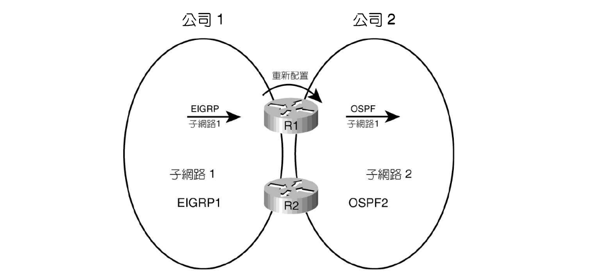
- 大部分互連網路只能使用一種內部閘道協定(interior gateway protocol, IGP)來通告IP路徑，並學到IP路徑。
- 當擁有超過一個以上的路由協定，IGP學到的路徑必須以邊界閘道協定(Border gateway protocol, BGP)進行同告。
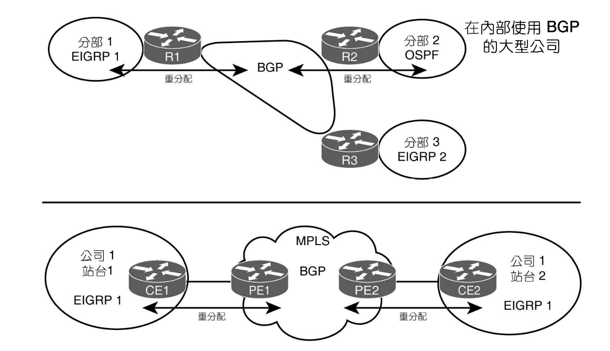
觀念與程序
重分配需要滿足：
- 每個路由領域間至少有一條實體鏈路正常工作
- 每個路由領域均有路由協定在正常工作
- 每個路由領域必須另外設定重分配，告訴路由器取出某個路由協定學到的路徑，通告到其他地方
細節：
- 每個路由協定實作內容不同，故不可能使用協定特定的拓樸資訊進行重分配
- 採用雙方路由協定所能瞭解的表格：IP路由表
當 redistribute 指定另一個路由來源的 IGP 時，該指令是在告訴路由器重分配：
- 路由表中透過該路由協定學到的路徑
- 啟用該路由協定之介面上的所有直連路徑
以下有個簡單的例子，目標使 EIGRP 通告子網路 11,12,13，OSPF通告子網路 1,2,3
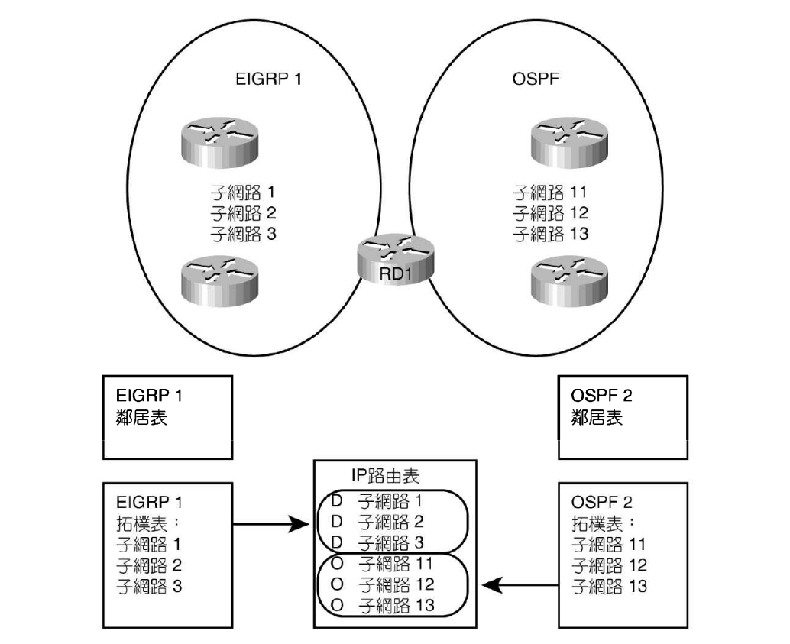
- 在 EIGRP 列出
redistribute ospf 2，告訴 RD1 查詢路由表，將 OSPF 2 學到的路徑加到 EIGRP 的拓樸表裡 - 相反的，在 OSPF 列出
redistribute eigrp 1，告訴 RD1 查詢路由表，將 EIGRP 1 學到的路徑加到 OSPF 的拓樸表裡
根據不同路由協定，redistribute 也會以不同的方式處理資料，以 OSPF 為例：
- OSPF 將重分配的路徑視為外部路徑，OSPF 會替每個重分配的子網路建立第五型 LSA (當重分配到 NSSA 則為第七型 LSA)
- OSPF 需要將整體權值指派給外部路徑的 LSA
- 重分配設定需要包含 OSPF 成本，可能也可能不會與路由表中的權值相符
EIGRP < OSPF
1 | redistribute {protocol} [{process-id}|{as-number}] [metric {bw} {delay} {reliability} {load} {mtu}] [match {internal|nssa-internal|external 1|external 2}] [tag {tag-value}] [route-map {name}] |
redistribute ospf [{process-id}|{as-number}] metric ...- 需設定權值才能夠正常運作，因為重分配後沒有 EIGRP 權值元件預設值可以使用
- default-metric：涵蓋所有 redistribute 指令
- redistribute … metric：涵蓋該 redistribute 指令
- redistribute … route-map：涵蓋 route-map 匹配到的路徑
若外部路徑來自另一個 EIGRP，會有一個預設的權值設定
檢驗
show ip eigrp topology：觀察 via redistributed
OSPF < EIGRP
1 | redistribute {protocol} [{process-id}|{as-number}] [metric {metric-value}] [metric-type {type-value}] [match {internal|nssa-internal|external 1|external 2}] [tag {tag-value}] [route-map {name}] [subnets] |
redistribute eigrp ...- 權值設定
- default-metric：涵蓋所有 redistribute 指令
- redistribute … metric：涵蓋該 redistribute 指令
- redistribute … route-map：涵蓋 route-map 匹配到的路徑
- 若未定義，OSPF 會使用預設 metric
- 從 BGP 取得路徑：1
- 從其他來源取得路徑：20
- 重分配到 NSSA，建立第七型LSA；其餘則建立第五型LSA
- 預設使用外部路徑權值類型2 (簡稱E2)
- 預設僅通告分級式網路，除非使用 subnets option
E2路徑
依照定義，執行重分配到 OSPF 的路由器必須是 ASBR，且會建立該子網路的第五型 LSA，欄位如下：
- LSID：子網路編號
- Mask：子網路遮罩
- Advertising Router：負責通告路徑的 ASBR 之 RID
- Metric：由 ASBR 設定的權值
- External Metric Type：外部路徑權值類行為1或2
建立第五型 LSA 後，ASBR 會洪泛整個區域。如果有 ABR 存在，則會再繼續將該第五型 LSA 洪泛到非末梢區域中。
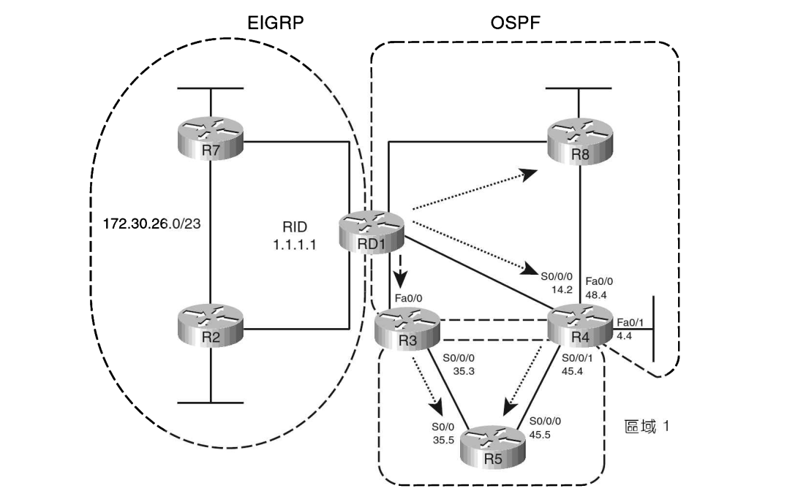
區域內
若路由器有多條到達相同目的子網路之 E2 路徑時，會根據到達 ASBR (通告E2權值最低的)最低成本的路徑來選出最佳路徑。
- 先比 metric (預設為20)，根據 metric 選擇最佳路徑 (忽略內部路徑成本)
- metric 一樣則使用內部成本選擇最佳路徑
以上圖為例 R4 有兩條路徑可以到達 ASBR RD1，R4 會選擇成本最低的最佳路徑，因為成本皆為預設的 20，所以比較內部路徑成本。
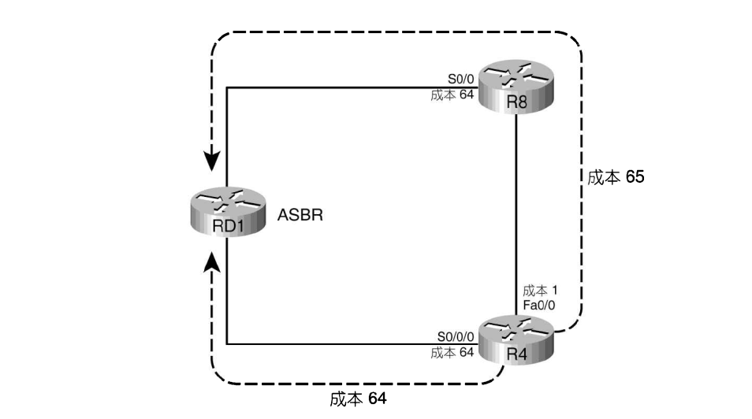
區域間
建立第四型 LSA 提供 ABR to ASBR 的 cost
- 先比 metric (預設為20)，根據 metric 選擇最佳路徑 (忽略內部路徑成本)
- metric 一樣則使用內部成本 + 第四型 LSA 的成本選擇最佳路徑
第四型 LSA 會列出 ASBR 的 RID、建立並洪泛第四型 LSA 的 ABR 之 RID，也會列出 ABR 到達 ASBR 的成本。
- ABR 將第五型 LSA 轉送到區域時，會先查看建立第五型 LSA 的 ASBR 之 RID
- ABR 建立第四型 LSA，其中列出該 ASBR 的 RID 以及到達該 ASBR 的成本
- 洪泛第四型 LSA 到相鄰的區域
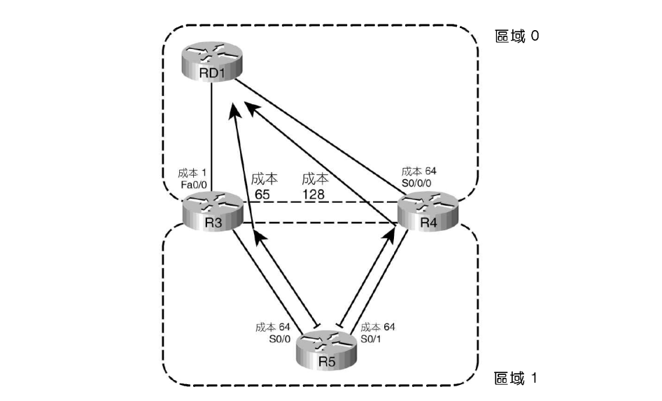
- R3 建立並洪泛第四型 LSA 到區域1
- 該 LSA 列出 ASBR 1.1.1.1、ABR 3.3.3.3 以及 R3 到達 RD1 的成本 1
- R4 也會做相同的事
- 將本身抵達 ABR 的內部成本加上第四型 LSA 列出的成本來計算路徑的總成本
- 因為 R5 的外部路徑權直接為 20，所以選擇經過 R3 的路徑
E1路徑
- E2 會忽略內部 OSPF 成本，僅根據外部路徑權值來挑選成本最低的路徑
- E1 是將外部路徑權值累加路徑中每個出口介面的成本，再進行權值的比較
區域間的計算要再加上抵達 ABR 到 ASBR 的成本，整體來看需要：
- 抵達 ABR 的最佳區域內部成本 (區域內的 LSDB)
- ABR 到 ASBR 的成本 (第四型 LSA)
- 外部路徑的成本 (第五型 LSA)
其餘邏輯與E2相似
E1 vs E2
對 E1 而言，外部與內部路徑成本皆與最佳路徑的選擇有關。E2 則只有外部路徑成本左右最佳路徑的選擇 (除非 metric 相同)。
depend on 規劃：永遠透過某台路由器傳送 / load-balance
NSSA的外部路徑
重分配時使用第七型 LSA，轉送到其他區域時再轉為第五型 LSA
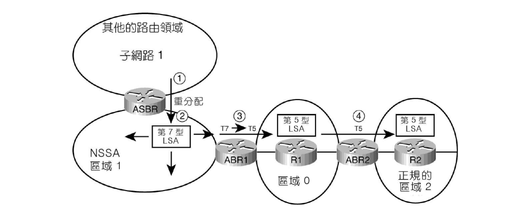
詳細參考半末梢區域
Route-map 重分配路徑
使用情境：需要根據不同路徑而設定不同的權值，或是有些設計只有一部份的路徑需要重分配
redistribute match {internal|external 1|external 2|nssa-external} route-map {map-name}
route-map 中的 match 子明令：
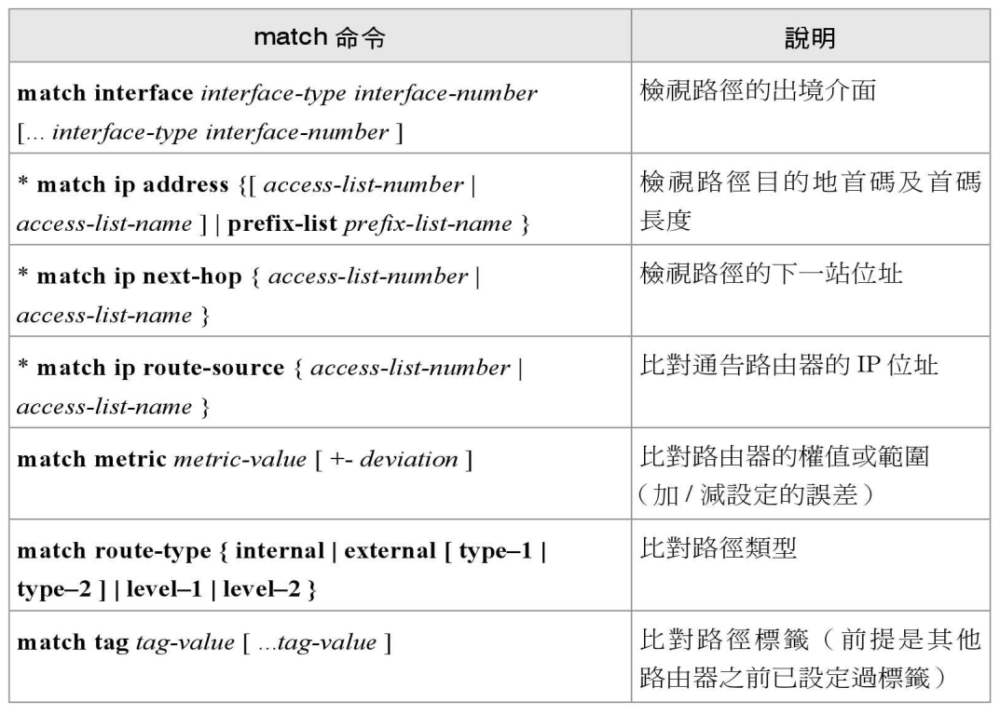
- 如果在 route-map 是 permit，路徑便會重分配
- 如果在 route-map 是 deny，路徑就會被過濾
對於未經 route-map 過濾的路徑，可以用 set 設定其他值：
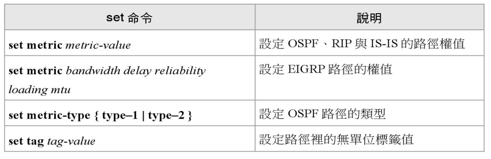
route-map 有兩種比對路徑的方案：
option1：比對具有 deny 動作的 Extended IP ACL 來篩選路徑。option2：以含有 permit 動作的 IP prefix-list 比對允許的路徑。
ip access-list 與 ip prefix-list：都有一個隱性的 deny all
權值設定
route-map 中的 set metric 子命令，可以設定頻寬、延遲、可靠度、覆載、MTU
在重分配到 OSPF 時需要完整的五個參數
外部路徑類型設定
route-map 中的 set metric-type {type-1|type-2} 可以將類型設定為 E1 或是 E2
預設為 E2
distribute-list
如果只需要在重分配時進行路徑過濾，不需要其他的功能，可以直接用 distribute-list
distribute-list {ACL|Prefix-list} out {protocol} {AS-number|...}
- 參照單一的 ACL 或是 Prefix-list
- 必須使用 out
多個重分配點問題
單的分配點，如果設備故障，會導致不同領域的多個主機跟著故障。若重分配不可或缺，會使用至少兩個路由器進行多個重分配。
多重分配點有可能導致「領域迴圈」的問題，問題在於一個領域內的路徑會通告給另一個領域，然後又回到原來的領域
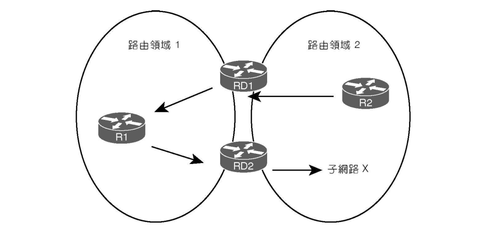
- RD2 將子網路 X 通告到到路由領域 1
- RD1 將子網路 X 再通告回路由領域 2
- 當子網路 X 帶著較低權值回到最初領域時問題就發生了，因為二次重分配的路徑比在領域2內部通告的路徑權值更佳
調整權值
並根據不同路由協定設定內部路徑權值小於外部路徑，比如說在重分配路徑時刻意指派較高的權值。
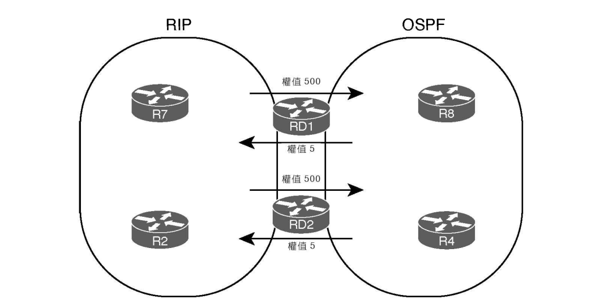
調整管理距離
每一條路徑被加入到路由表時，就會有其對應的管理距離 (Administrative distance, AD)，當必須同時考慮多條路徑時，第一個考慮的項目不是權值而是 AD 值。AD 越低，路徑越佳。
AD 為路由器內部定義，不通告
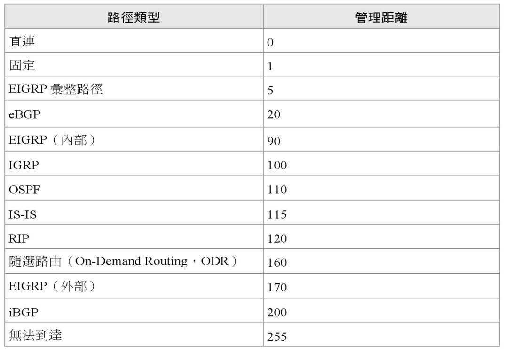
EIGRP 能夠以預設路徑 AD 值預防
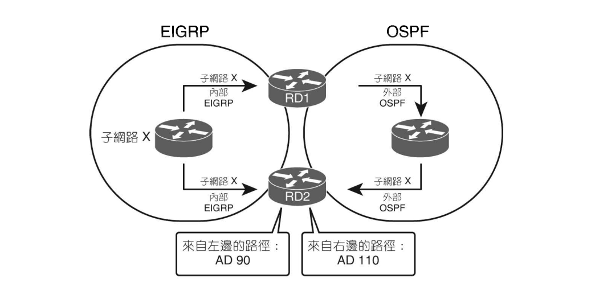
- RD2 將 EIGRP 視為最佳路徑，將該路徑加到路由表中
- RD2 沒有子網路 X 的 OSPF 路徑，故 RD2 不會重分配子網路 X 的路徑到 EIGRP
- 因為路徑重分配時必須存在在路由表中，子網路 X 列為 EIGRP 路徑而非 OSPF 到 EIGRP 的重分配路徑
設定
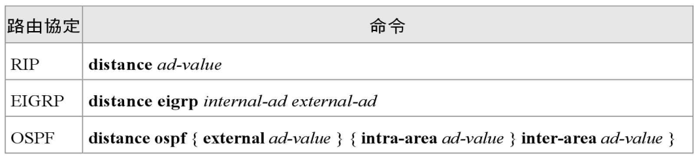
多種路由協定下的情況
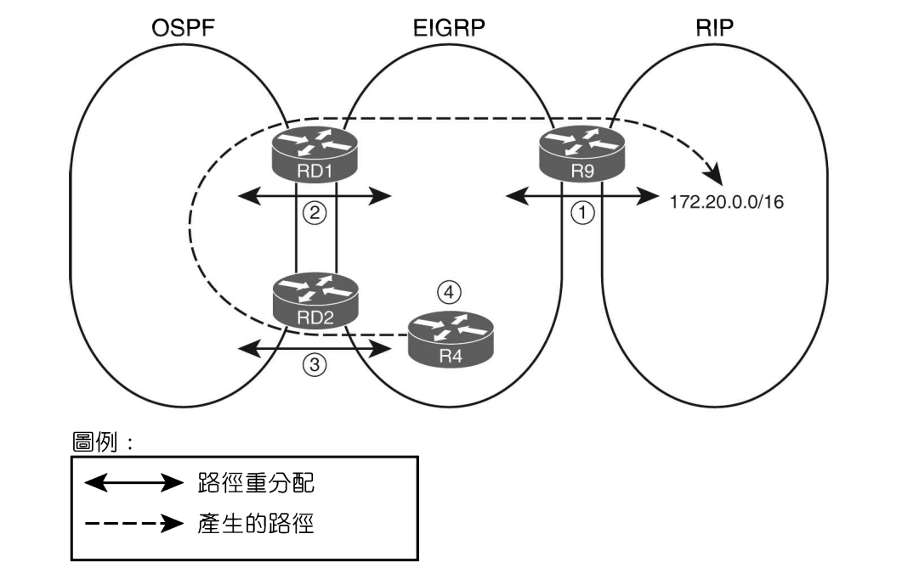
- 設定路徑優先度
- metric
- AD 值
- 過濾反向 redistribute 的路徑
- 利用 route map 直接過濾該段路由
- 設定 route tag 並使用 route map 過濾
路徑標籤
一個 32 位元整數，可以指派給任一給定的路徑。
- 設定使用 route map 中的 set 子命令：
set tag {tag-num} - 之後在指定的 route map 進行過濾：
match tag {tag-num}
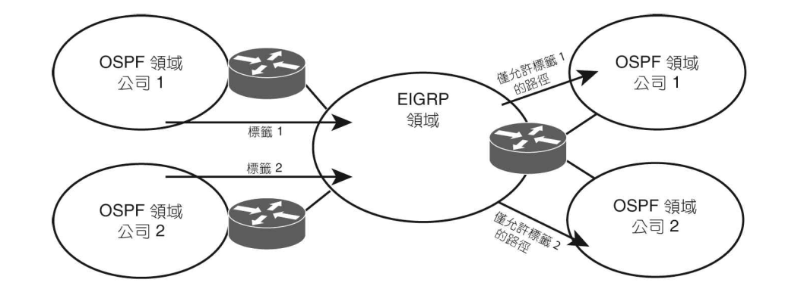
防止領域迴圈採取的策略如下：
- 在來自 X 通告到 Y 的路徑設定 tag
- 在反向重分配 (Y 往 X)，比對標籤值並過濾帶有該標籤值的路徑
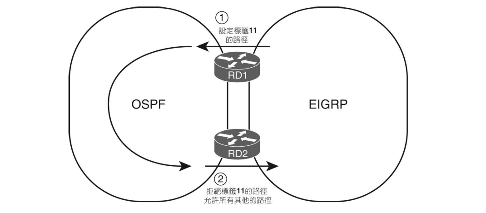